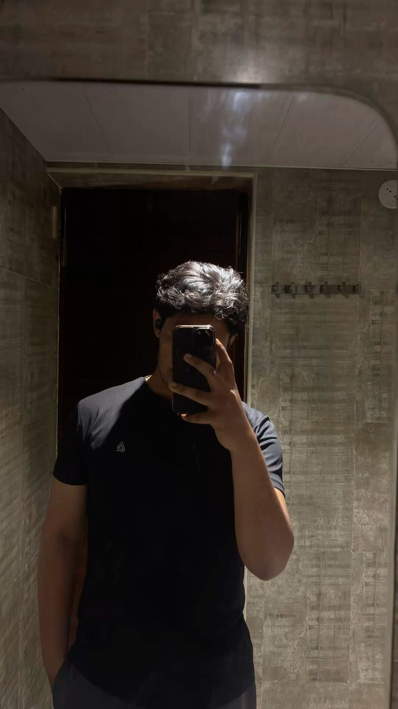
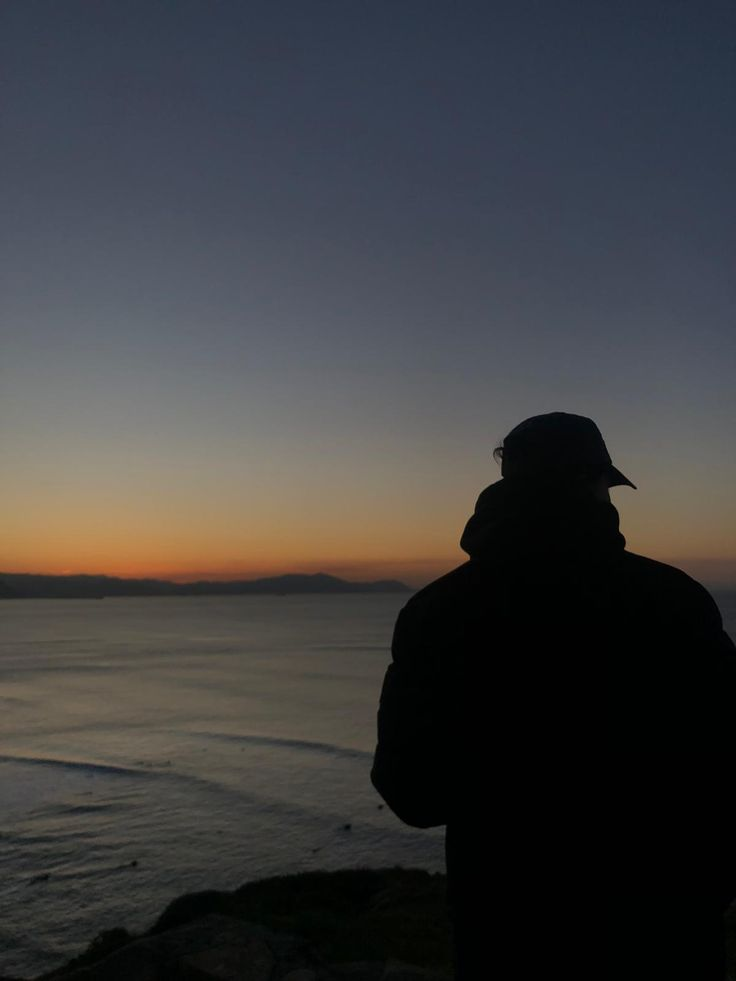

The archive is just beginning.
Writing will live here when there is something worth putting into words.
I’m interested in the systems we build, the people behind them, and the ideas that shape the way we live and work.

A map of the things occupying my attention — technical work, ideas, books, observations, interests, and the person developing underneath all of them.
I want to understand the entire path from raw data to a useful machine-learning system — and the problem that system is supposed to solve.
A portfolio-scale airline system moving from validation and exploration into structured data pipelines, machine learning, evaluation and decision-oriented visualization.
The foundation project: retail data explored through Python, SQL and Power BI, with supervised learning and customer segmentation used to move beyond descriptive reporting.
Working ideas, not slogans. Questions about capability, people, discipline, ambition and the difference between knowing something and understanding it.
Learning matters when it changes what I can actually understand, build and solve.
The model is one part of the system. The data, engineering, deployment and business problem matter too.
Activity is easy to measure. Capability is harder — and more important.
I want connections between ideas, not a collection of disconnected tools.
Consistency without an audience. The quiet accumulation of work before there is anything worth showing.
Behavior, incentives, perception and motivation shape the systems people create and use.
Capability, independence, meaningful work and increasing control over my direction.
Information is easy to collect. Understanding requires testing, connecting and returning to an idea.
Not a fake ten-book list. Three real books I am actually reading, exploring and taking notes from.

The professional side demonstrates what I can build. The rest of this archive is here to show what influences the person doing the building.
A growing archive of ideas I’m trying to understand — not answers I pretend to already have.
Writing will live here when there is something worth putting into words.
Notes on incentives, perception and the human layer of technical work.
Thoughts on moving from consuming information to building durable mental models.
Human behavior, incentives, perception, motivation and influence.
Machine learning, AI, systems and the changing relationship between humans and technology.
Strategy, negotiation, decision-making, companies and value creation.
Stoicism, responsibility, discipline, purpose, freedom and meaning.
Stories about ambition, power, survival, leadership, identity and behavior.
Progression, strategy, identity, loyalty, transformation and becoming capable.
Data, engineering, architecture and understanding how parts become a whole.
Interfaces, objects, spaces and visual identities that feel intentional.
Machine Learning foundations, Data Science, SQL, GitHub, Power BI, AWS and the deeper ML Engineering / MLOps path.
The BTS Airline Analysis & Machine Learning System, Superstore, and a portfolio that shows how I think as well as what I can build.
Robert Greene, Stoic material and ideas that help me understand people, strategy, discipline and myself.
How to turn technical knowledge into actual professional capability instead of simply accumulating courses and certificates.
Starting the Machine Learning Engineer path seriously in October and building increasingly sophisticated systems.
Technical depth, consistency, discipline, communication, physical capability and finishing what I start.
I’m building toward a career in Machine Learning while trying not to reduce myself to a job title. The technical work matters. So does the person doing it.
I want to be capable, disciplined, independent and difficult to manipulate — while staying curious enough to change my mind when understanding demands it.
Problem → Data → Engineering → ML → Deployment → Business outcome.